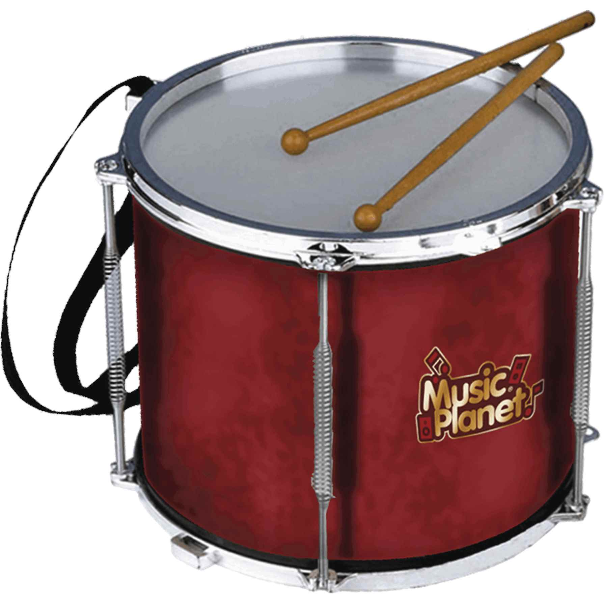
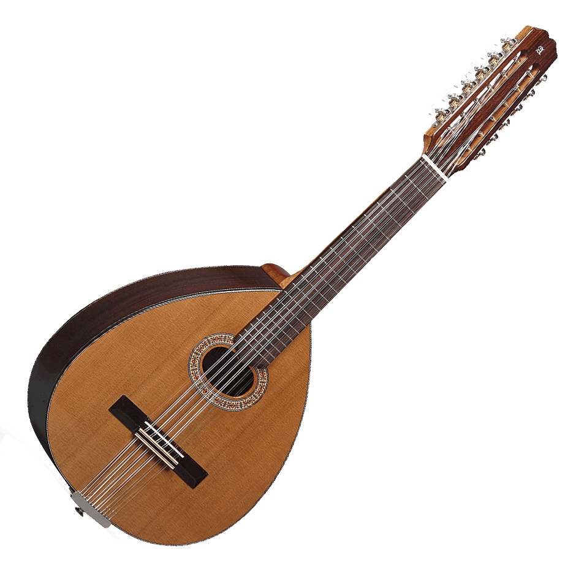
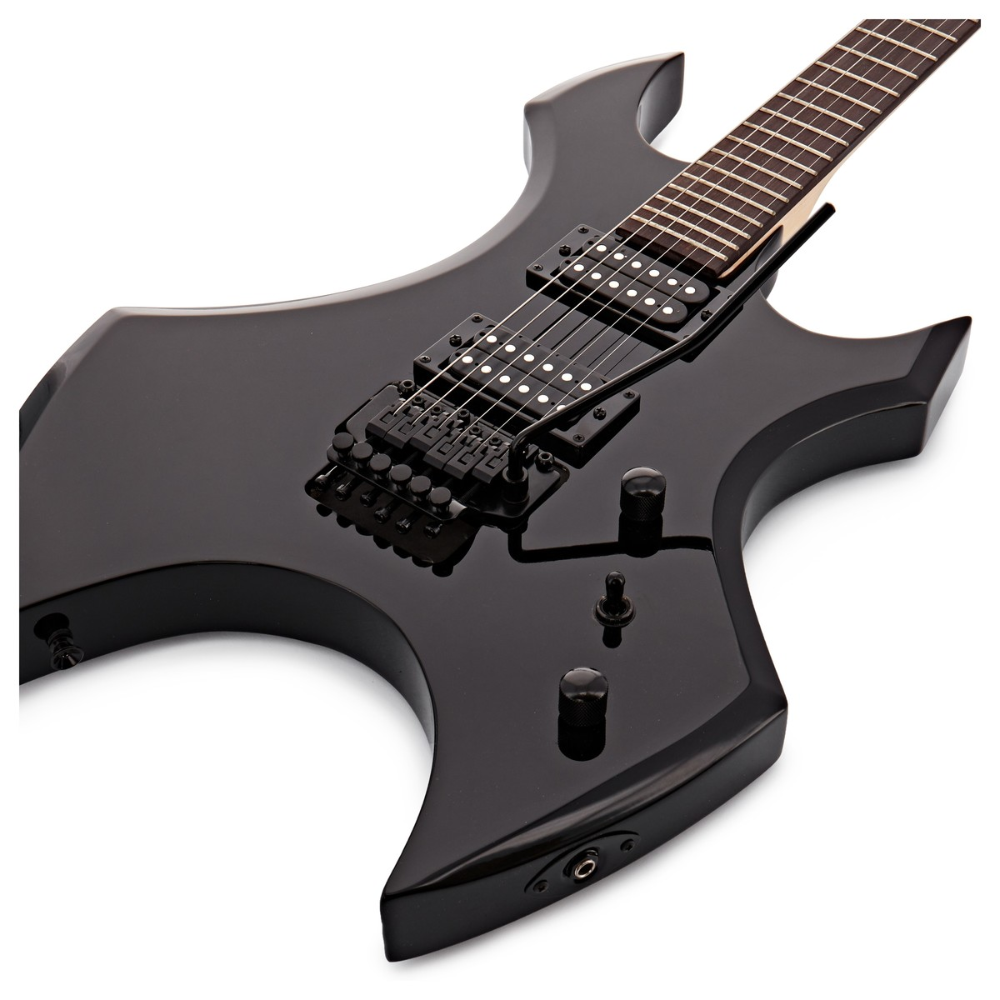

Los primeros instrumentos musicales se crearon a partir de materiales naturales como huesos, madera y piedras. Estos instrumentos eran usados en rituales religiosos y celebraciones. Los tambores y las flautas son ejemplos de instrumentos primitivos que todavía se utilizan en algunas culturas.
Durante la Edad Media y el Renacimiento, se desarrollaron instrumentos más complejos como el laúd, el órgano y el clavicordio. Estos instrumentos eran utilizados en la música sacra y cortesana, reflejando la importancia de la música en las ceremonias religiosas y la vida noble.
En la época moderna, con los avances en la tecnología, los instrumentos musicales han evolucionado significativamente. La invención de la guitarra eléctrica, los sintetizadores y otros instrumentos electrónicos revolucionaron la música, permitiendo nuevos estilos y formas de creación musical.
